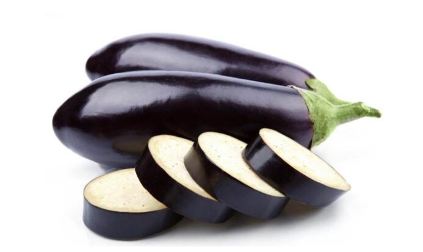

茄子 别名：落苏、茄瓜
别名：落苏、茄瓜
营养价值
1.茄子的营养丰富，含有蛋白质、脂肪、碳水化合物、维生素以及钙、磷、铁等多种营养成分。
2.茄子中维生素P的含量很高，每100克中即含维生素P750毫克。能增强人体细胞间的黏着力，增强毛细血管的弹性，减低脆性及渗透性，防止微血管破裂出血。
3.茄子还含磷、钙、钾等微量元素和胆碱、胡芦巴碱、水苏碱、龙葵碱等多种生物碱。尤其是紫色茄子中维生素含量更高。可以抑制消化道肿瘤细胞的增值。
4.茄子纤维中所含的维生素C和皂草甙，具有降低胆固醇的功效。国外学者提出“降低胆固醇12法”，食用茄子即是其中方法之一。
5.茄子所含的B族维生素对痛经、慢性胃炎及肾炎水肿等也有一定辅助治疗作用。

功效与作用
味甘、性凉，入脾、胃、大肠经。
1.治胃癌
国外研究结果表明它的抗癌性能是其他有同样作用的蔬菜的好几倍，是抗癌强手。能抑制消化道肿瘤细胞的增值针对胃癌、盲肠癌有较好的抑制作用。
2.抗衰老
茄子含有维生素E，有防止出血和抗衰老功能，常吃茄子，可使血液中胆固醇水平不致增高，对延缓人体衰老具有积极的意义。
3.降低胆固醇保护心血管
经常吃茄子有预防高血压、冠心病、动脉粥样硬化、紫斑症、坏血病及促进伤口愈合等作用。
4.清热解暑
对于容易长痱子、生疮疖的人,尤为适宜。
本站文章均来自互联网，仅供学习参考，如有侵犯您的版权，请邮箱联系我们删除！
 上一篇
上一篇